Py4J gateway: the local Python-to-JVM bridge
component index
Classic PySpark uses Py4J so the Python driver can invoke methods on
live objects in the driver JVM. A Python _jsc or _jdf is a handle
to a JVM object, not a copy of a context or dataset. The JVM listener binds
loopback: inside the AM container in YARN cluster mode, on the submit host in client
mode. Executors do not connect to this port. Their messages use Spark RPC;
executor-side Python workers have a different protocol. Spark Connect's remote session
is not this bridge.
Flow at a glance
- Python DataFrame: Calls collectToPython on the driver JVM through Py4J.
- Driver JVM: Returns connection details for a separate data socket.
- Python driver: Reads row batches from that socket into a list.
Key distinction: A successful Py4J call tests the local bridge, not the executors' route to the driver.
Show the animated flow

Bootstrap and lifetime
- JVM publishes connection details. For a submitted
.py file, deploy.PythonRunner
creates Py4JServer(SparkConf). The server generates an authentication secret and
requests Java port 0 (an ephemeral port). With PYSPARK_PIN_THREAD=true, the default,
it uses ClientServer to preserve Python/JVM thread affinity; otherwise it uses
GatewayServer. The runner joins the initialization thread before
passing the actual port and secret in the child's environment.
- Python attaches. Under a lock,
SparkContext._ensure_initialized caches
the gateway and its jvm view. Despite the name launch_gateway(conf), when
PYSPARK_GATEWAY_PORT exists the attach branch reads the integer port and
secret and spawns nothing. It builds the corresponding authenticated ClientServer
or JavaGateway, imports JVM class names, and returns the gateway. A caller needing
JVM-to-Python callbacks can start a separate callback listener.
- Use and release. Each call names a JVM target, method, and arguments. A scalar
can come back as a Python value; an object can come back as a proxy for the next call.
For a submitted script the runner closes the listener after the child exits.
Stopping the SparkContext does not itself close that listener.
One action, two local channels
Sequence diagram · Open full sizeText equivalent
sequenceDiagram
participant P as Python driver
participant J as Driver JVM
P->>J: Py4J call on _jdf.collectToPython()
Note over J: Execute plan and create a socket to serve batched pickles
J-->>P: Py4J reply: connection info, socket secret, server handle
P->>J: Connect to the separate authenticated local socket
J-->>P: Serialized row batches
Note over P: Deserialize to list of RowCompare the Python call sites for _jdf.count() (a scalar) and DataFrame.collect()
(a list[Row]). For collect, the JVM method returns an
Array[Any] describing where to read. A separate data socket carries
the row batches over loopback, or over a Unix-domain socket when configured and supported.
The rows are not one Py4J reply per record.
Diagnostic: JAVA_GATEWAY_EXITED is a different bootstrap
When Python starts first (for example a classic PySpark shell) and has no supplied
port, launch_gateway starts spark-submit, then reads a connection-info file.
The JVM publisher writes the port and length-prefixed UTF-8 secret to a
temporary file and renames it into place; it watches stdin for the parent to exit.
JAVA_GATEWAY_EXITED is raised in this branch if no connection file was published when
the wait ends. Inspect that spawned JVM's startup output. In the ordinary
spark-submit orders.py attach branch, a refusal on the inherited port points instead
to the local driver JVM/listener, not executor-facing networking. Do not print the
gateway secret when checking the environment.